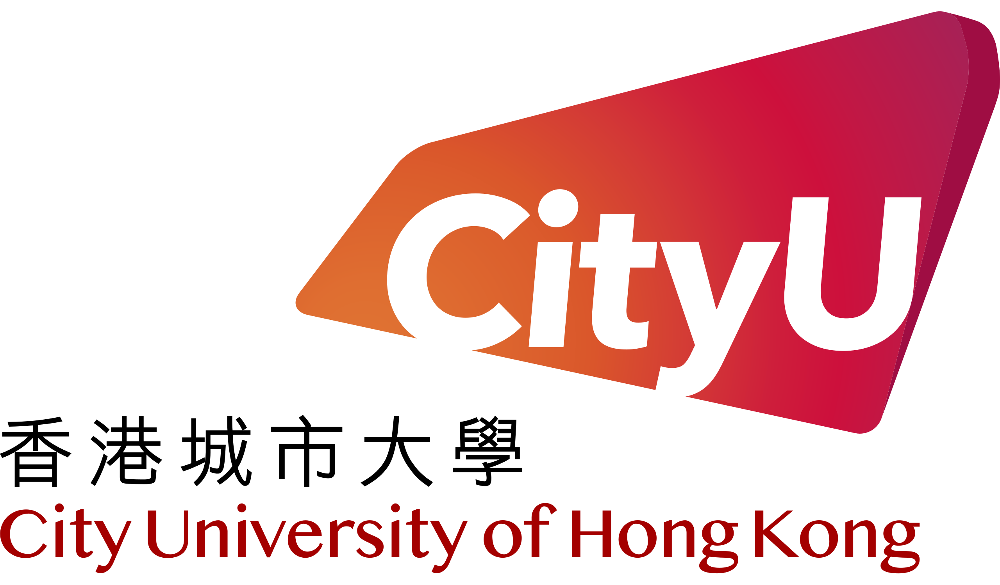
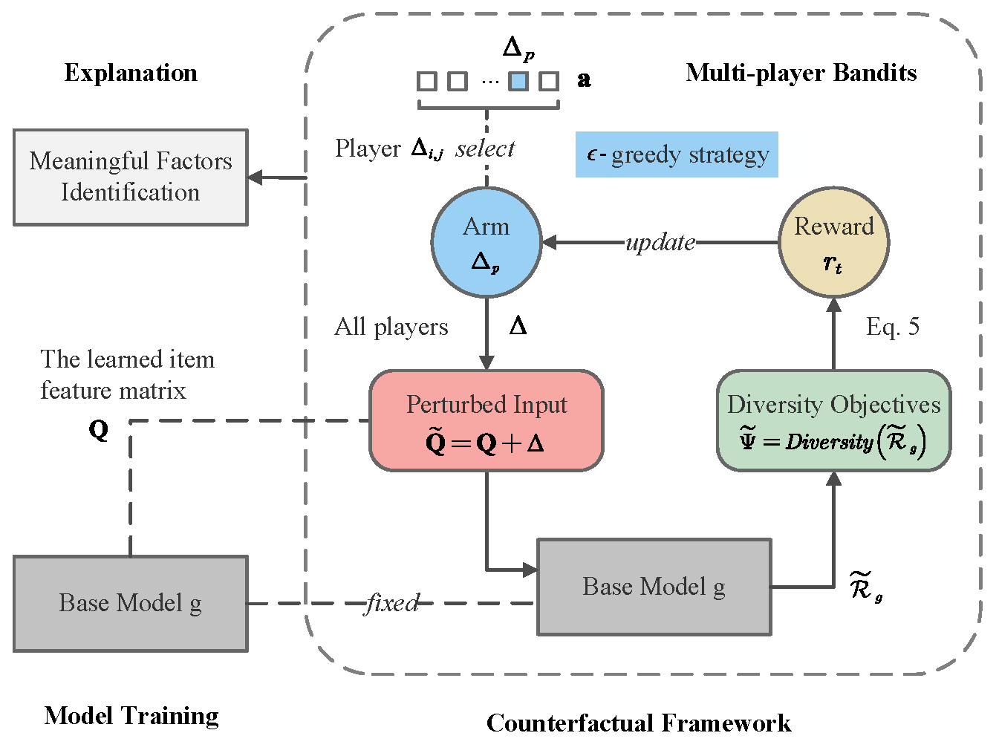
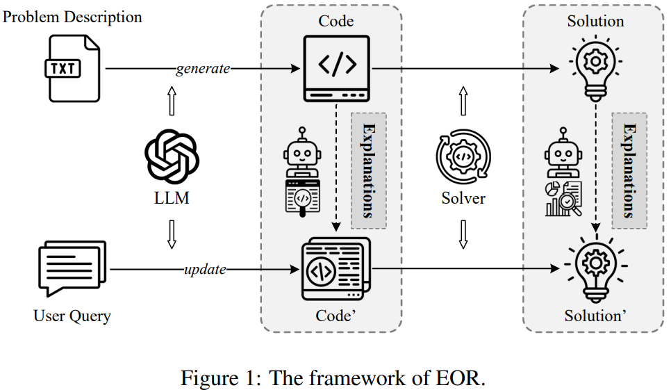
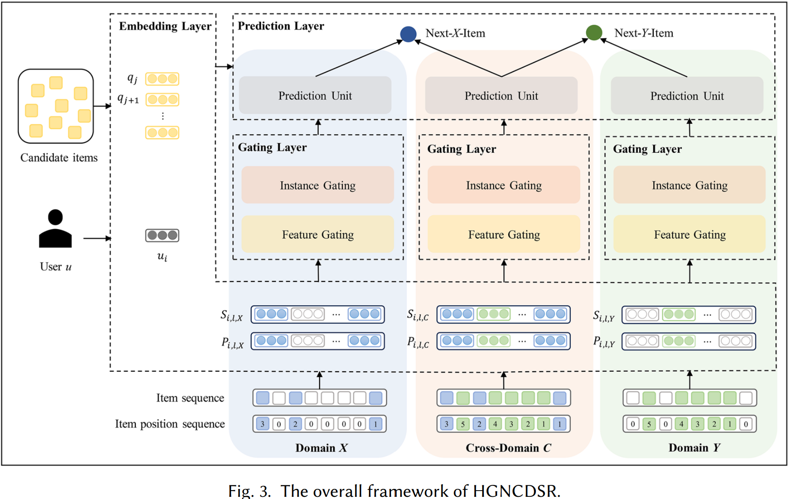
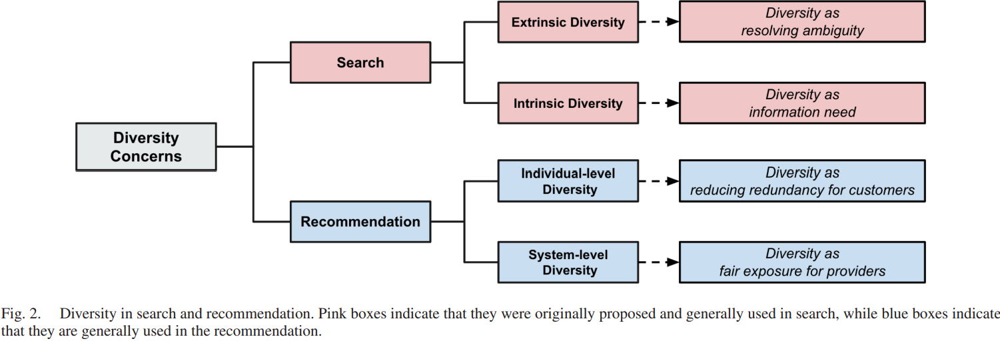
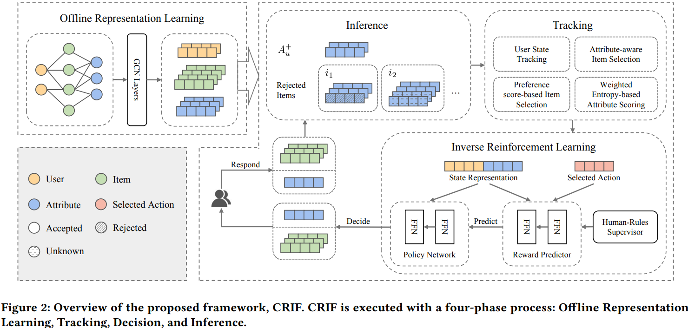
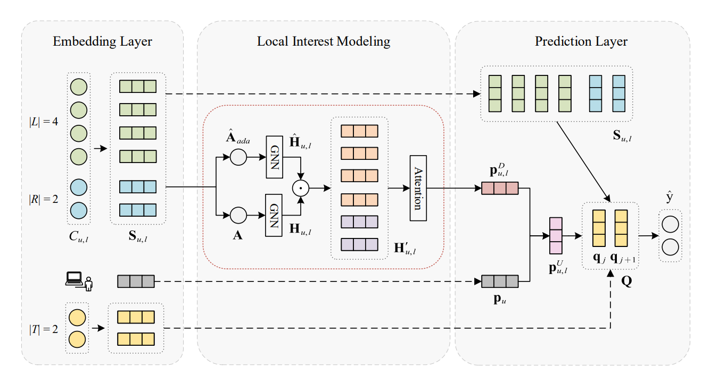
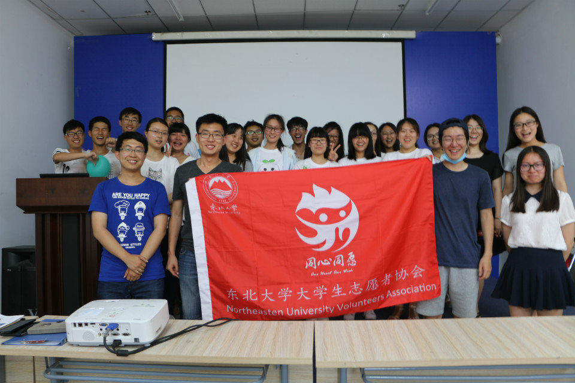
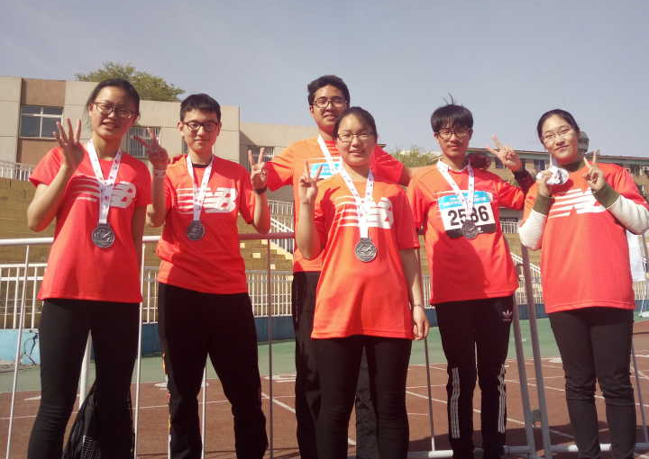

I am currently a Ph.D candidate (the third year) at the School of Computing, City University of Hong Kong. My supervisor is Dr. Chen Ma and I am doing the research about Explainable AI, Data Valuation, LLMs for OR.
I received the master's degree from the School of Computer Science and Engineering, Sun Yat-sen University, where I was enrolled in the Outstanding Postgraduate Candidates Exempt from Admission Exam program. My supervisor was Prof. Yubao Liu and I did the research of graph-based sequential recommendation.
I received the bachelor's degree from the School of Software College, Northeastern University, where my academic enlightenment advisor was Prof. Guibing Guo and I followed him to research the topic of explainable recommendation.

Ph.D in Computer Science
City Univeristy of Hong Kong
Hong Kong SAR, China
Sep 2022 - Present
M.S. in Software Engineering
Sun Yat-sen University
Guangzhou, China
Sep 2019 - Jun 2022
B.S. in Software Engineering
Northeastern University
Shenyang, China
Sep 2015 - Jun 2019

we propose a \textbf{C}ounterfactual \textbf{M}ulti-player \textbf{B}andits (CMB) method to deliver explainable recommendation diversification across a wide range of diversity metrics. Leveraging a counterfactual framework, our method identifies the factors influencing diversity outcomes. Meanwhile, we adopt the multi-player bandits to optimize the counterfactual optimization objective, making it adaptable to both differentiable and non-differentiable diversity metrics.
Paper CodeWe propose Shapley Value-driven Valuation (SVV), a framework that evaluates interactions based on their objective impact on model training rather than subjective intent assumptions. In SVV, a real-time Shapley value estimation method is devised to quantify each interaction's value based on its contribution to reducing training loss. Afterward, SVV highlights the interactions with high values while downplaying low ones to achieve effective data pruning for recommender systems. In addition, we develop a simulated noise protocol to examine the performance of various denoising approaches systematically. This work shifts denoising from heuristic filtering to principled, model-driven interaction valuation.
Paper Code
We propose a comprehensive framework, Explainable Operations Research (EOR), emphasizing actionable and understandable explanations accompanying optimization. The core of EOR is the concept of Decision Information, which emerges from what-if analysis and focuses on evaluating the impact of complex constraints (or parameters) changes on decision-making. Specifically, we utilize bipartite graphs to quantify the changes in the OR model and adopt LLMs to improve the explanation capabilities.
Paper Code
We propose a Hierarchical Gating Network for Cross-Domain Sequential Recommendation (HGNCDSR). Specifically, we simultaneously train single-domain and cross-domain interaction sequences, utilizing a hierarchical gating network to capture user interest representations in single-domain and cross-domain, respectively. A feature gating and an instance gating are applied respectively to extract user interests at item feature level and instance level.
Paper
In this survey, we are the first to propose a unified taxonomy for classifying the metrics and approaches of diversification in both search and recommendation, which are two of the most extensively researched fields of retrieval systems.
Paper Code
We propose a new CRS framework called Conversational Recommender with Implicit Feedback (CRIF). CRIF formulates the conversational recommendation scheme as a four-phase process consisting of offline representation learning, tracking, decision, and inference. In the inference module, by fully utilizing the relation between users' attribute-level and item-level feedback, our method can explicitly deduce users' implicit preferences.
Paper
We proposed a self-adaptive graph neural network with future contexts for sequential recommendation. SA-GNN applied a GNN model within both past and future contexts to model user dynamic interests, and utilized a self-adaptive module and attention module to weaken the negative effect of unsuitable connections in item graph.
Paper Code

